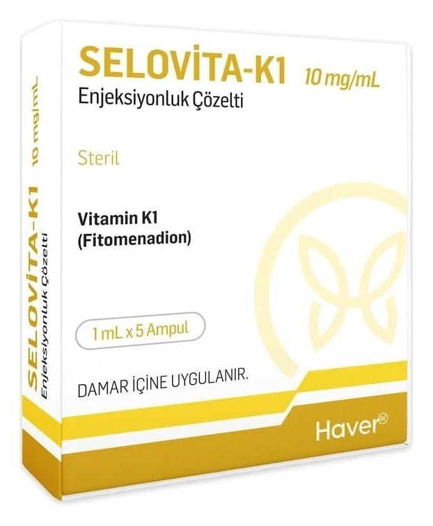

Selovita-K1 10 mg/ml Enjeksiyonluk Çözelti, 5 Adet

Ne için kullanılır
KT · Bölüm 1• SELOVİTA-K1, fitomenadion isimli etkin maddeyi içermektedir. Bu, K
vita mini olarak is imlendirilen insan yapısından gelen bir vita mindir. • SELOVİTA-K1 ampul, 1 mL içerisinde, 10 mg K
v ita mini (fitomenadion) içeren, 5 ampullük ambalajlarda piyasaya sunulmaktadır.
SELOVİTA-K1 aşağıdaki durumlarda kullanılmaktadır: • Kanın sula ndırılması amacıyla kullanılan birtakım ilaçların alımından sonra şiddetli kanamanın önlenmesi ve tedavisi • Karaciğer hastalığı bul unan veya hastalık sebebiyle vücutlarında düşük değerlerde K vita mini bulunan çocukların (1 yaşında ve daha büyük) tedavisi. SELOVİTA-K1 normalde çoc ukları tedavi etmek için, uzman hematolojist (hematoloji uzmanı) tarafından yapılan tavsiye doğrultusunda kullanılır.
• SELOVİTA-K1 vücudunuzun ka n pıhtıl aşma fakt ör lerini oluştur masına yardım ede rek etkisini gösterir. Bu ka n pıhtılaşma faktörleri, kana mayı dur durmaya yardımcı olur.